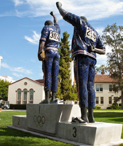

Welcome to Silicon Valley Center for Operations and Technology Management
The College of Business at San Jose State University (SJSU) offers an exciting new development, the Silicon Valley Business Stars Program (SVBSP). The Program aims specifically to provide visiting business students, corporate executives, technical professionals, and government officials throughout the world a unique and memorable learning experience about high-tech development and global business management in the Silicon Valley.
Silicon Valley Business Stars Program
The College of Business at San Jose State University (SJSU) offers an exciting new development, the Silicon Valley Business Stars Program (SVBSP). The Program aims specifically to provide visiting business students, corporate executives, technical professionals, and government officials throughout the world a unique and memorable learning experience about high-tech development and global business management in the Silicon Valley.
Business Operations and Technology Excellence Program
The College of Business at San Jose State University offers a new development for business excellence in operations and technology, the Business Operations and Technology Excellence Program (BOTEP). The Program aims especially at the application of academic theories and skills such as Six Sigma.
Silicon Valley Spirit Access Program
The College of Business at San Jose State University offers a global development, the lecture sessions, Silicon Valley company/museum/ exhibit tours and internships.
Main Heading under box 2
The College of Business at San Jose State University offers a global development, the Silicon Valley Spirit Access Program (SVSAP).
The Program focuses on workshops, seminars, special lecture sessions, Silicon Valley company/museum/ exhibit tours and internships.
The Program aims especially at the application of academic theories and skills such as Six Sigma.
For Additional Information
Please call (111)222-3333